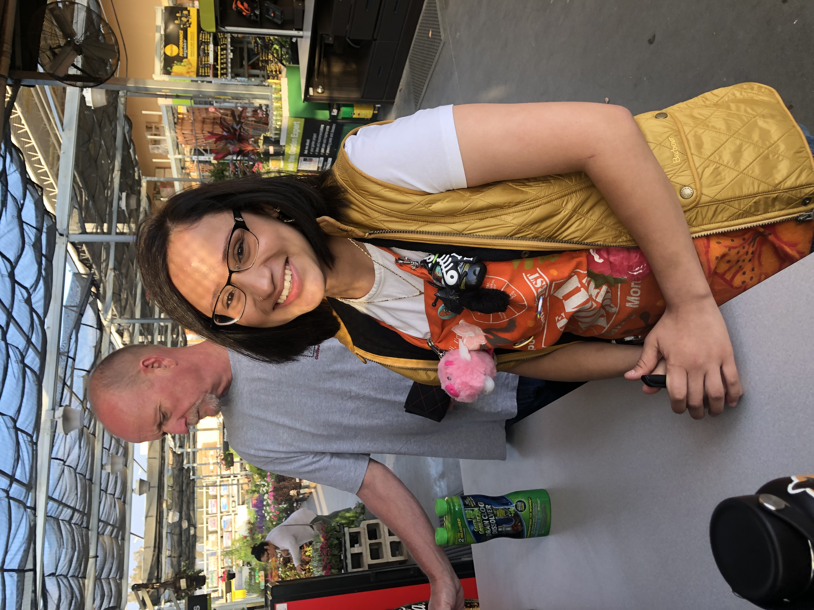
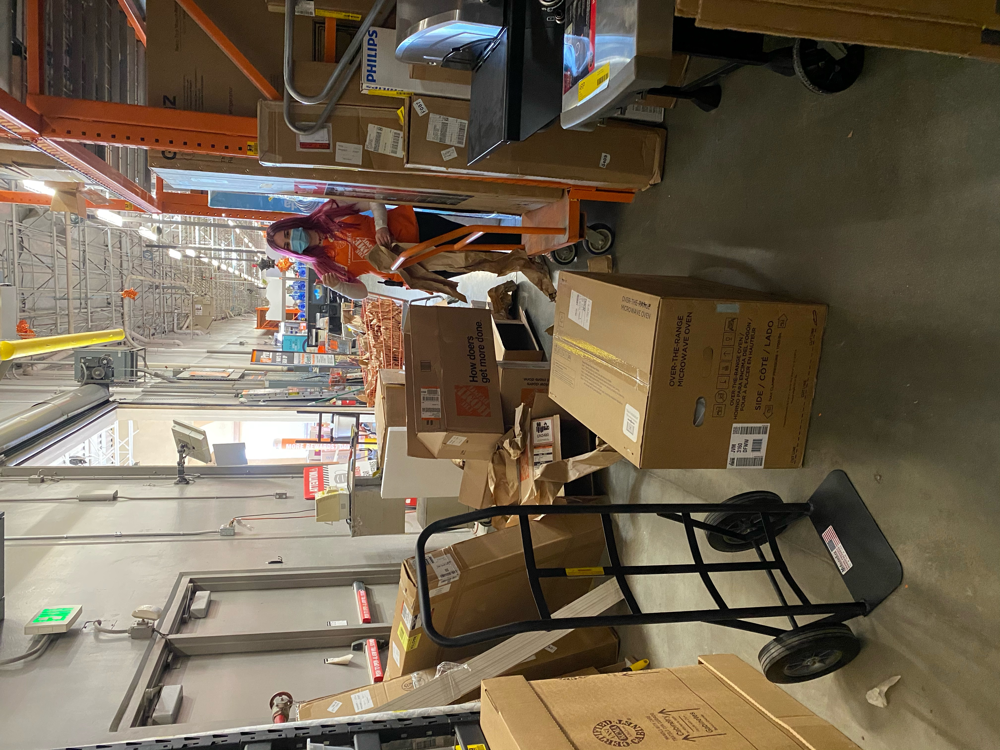
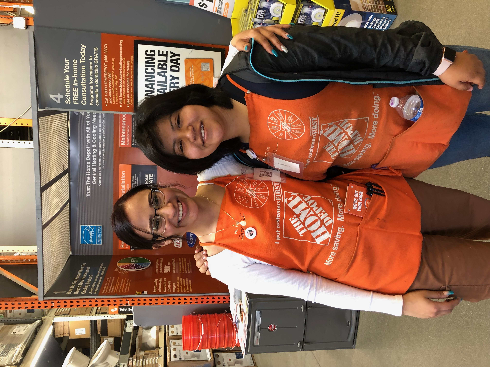
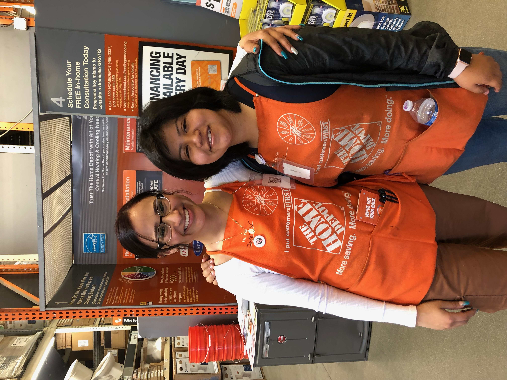
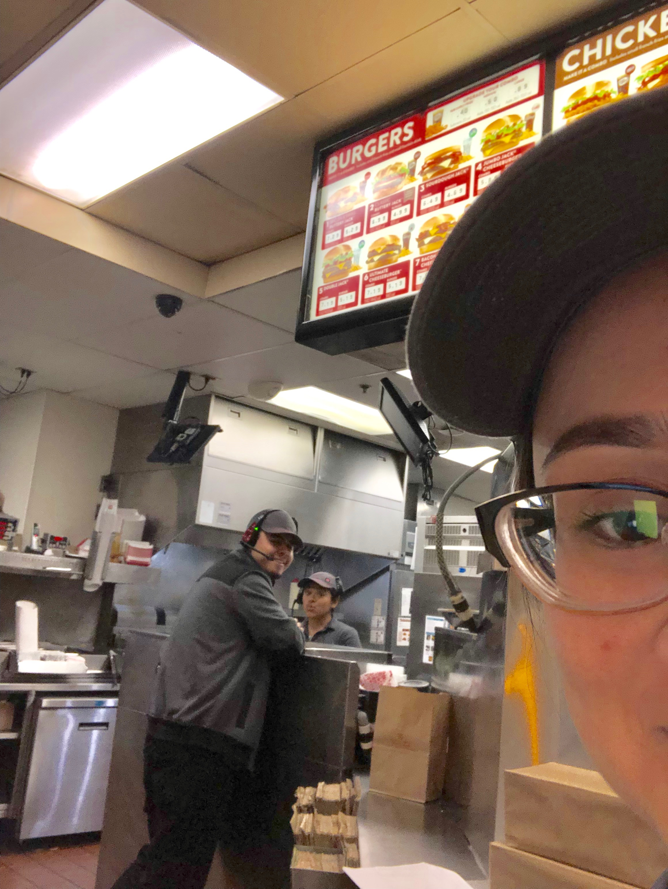
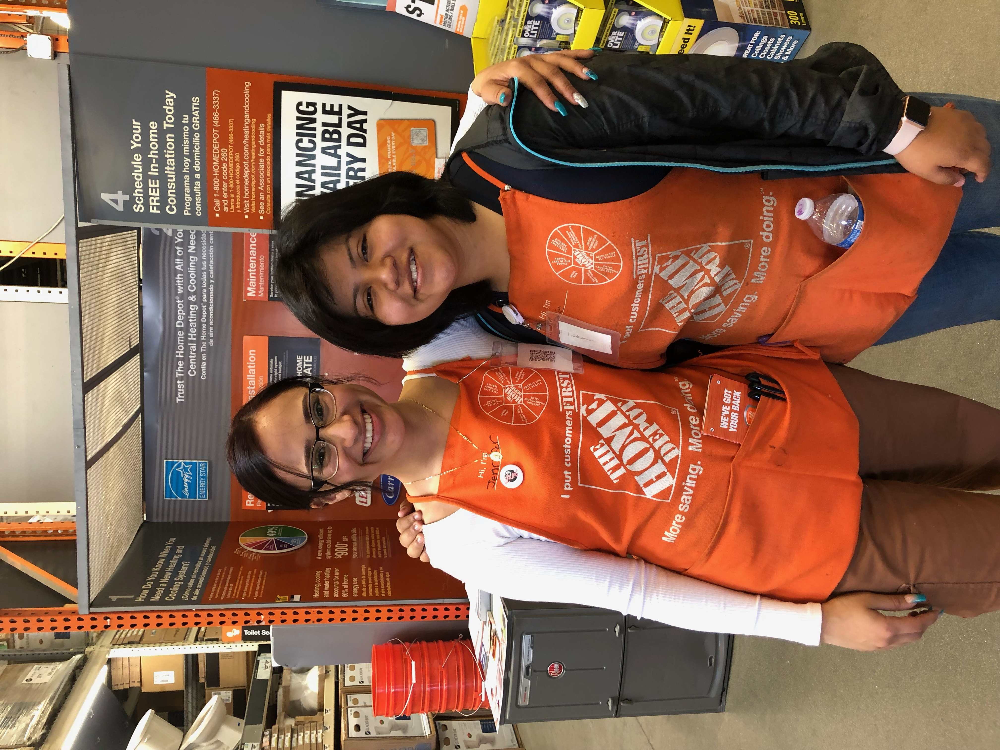
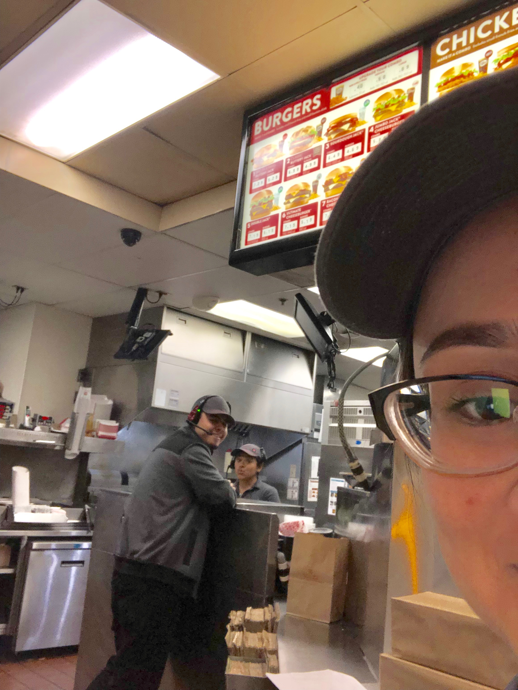

Jennifer Macias
I have prepared myself for my intended career by spending
my first two years at The University of California Riverside learning about sociology, which is a systematic approach in thinking about studying and understanding human social behavior and groups. It has been an education both in and out of the classroom. In the classroom, I have focused on sociology, while out of the classroom I have completed hours of volunteer work. Throughout my sophomore year, I have been volunteering after work in Gabriel's House TKC, a social service program for children and single mothers located in Oxnard, California. In doing so, I have had the opportunity to work with children and women who have undergone various types of circumstances that have prohibited them from successfully obtaining a job, home, or living on their own. This exposure to children and women has prepared me for family law by allowing me to gain real life scenarios with individuals who face many forms of hardship, as well as gain the skills necessary to help them overcome these obstacles. I have also attended a federal court where I have been able to learn first hand about the American judicial process which has also allowed me to understand each step necessary during a federal judicial process. My sociology courses have prepared me for a career in the family law industry. From my class in honors introduction to sociology to theoretical perspectives, and planned classes in methods of sociologic inquiry, gender and sexuality, and statistical analysis, I have the skills to find work as a Law Enforcement worker. My hope is that by transferring to the University of California, I can add to these competencies a larger sense of the importance of sociology in society, by learning about identity and society, criminology and deviance, social inequality, and family and gender. I look forward to pursuing my career path in family law
One of my greatest skills is time management.Time managment is one of the most challenging skills when having to manage work and school. Whether someone is working in order to pay for college or going back to school, trying to manage one's time in a professional and academic life is not simple. Be that as it may, the problem is not a lack of time, it's how people manage their time. Entering my freshman year of college as a full time student and full time associate allowed me to uncover my greatest talent, time management. This skill was not obtained all at once, rather, this skill was acquired over the year. In order to obtain this skill, I had to fail to succeed. My first year of college while working turned into one of my biggest defeats. The lack of time management deprived me of sleeping more than four hours a day. Pushing myself to do things throughout the day just became harder, by then I had realized that I could no longer continue this cycle. The first step in successfully managing my time was creating order by making a schedule. Taking the time to sit down and write out my day helped me obtain a clearer picture of what I had to work with in terms of setting up time to study and attend other responsibilities. A second step in obtaining better time management was learning to reduce procrastination. Rather than becoming overwhelmed by an insurmountable amount of homework, I decided to break up a big assignment into smaller steps in order to feel more motivated to continue. In doing so I was able to raise my GPA by the end of the year. Taking what I have, learned from last year, I have been able to successfully keep up with classes sophomore year by attending any unfinished assignments before doing anything else. In addition, I tackle on assignments two weeks in advance before the due dates in order to have sufficient time to enjoy myself, others, and work.
I have proven overtime in my lifecourse that I am capable of overcoming any barriers. Have you ever been working on something important, when suddenly a song starts playing in the background? Then that leads you to start lip syncing, which leads you to get up out of your chair and start dancing? Next thing you know, it's a new day, and you haven't done anything for an entire day. That's what it's like to have ADHD (Attention Deficit Disorder). I know because I've been diagnosed with ADHD since I was seven years old. For me, ADHD means having to try twice as hard as others. Throughout my life, school has always been my biggest opponent. Obtaining boredom during school was an effortless task that at times I'd look around the classroom for something more interesting to do. Sometimes, I would go as far as talk to other kids to amuse myself. The problem with this was that by talking, I never finished my work. Before I knew it, I was failing my classes and visiting the principal's office every day. My parents were confused. They knew I was smart but didn't show it. They decided to take me to the doctors who suggested I see a specialist. When it was done, the specialist told my parents that I had ADHD and prescribed me medication. What he failed to tell me was my life would no longer be the same. As years went by, I was no longer the girl who could talk for hours instead, I became this shy lonely girl who ignored everyone. This new me, as much as I wish I loved, was something I hated more than anything. I began to hide my medication. Slowly, I began to attend school without them as well. The first times were the hardest, especially when my grades began to go down. This was it, was I going to succeed or fail? I chose to succeed. Attending tutoring after school every day until high school graduation was the best choice I've ever made. If it wasn't for pushing myself to take a big risk, I wouldn't be the indestructible and independent individual I am today.
Experience
Service Desk
• Enters and audits all purchase orders for The Home Depot (THD) stores including type,
amount, total, cost and delivery schedule for the order(s), prepares daily batch sales reports
• Arranges daily/weekly deliveries to customer stores, works directly with dispatchers to
schedule appointments for timely deliveries and to resolve delivery/schedule issues as they
arise according to established department policies and procedures
• Works with Customer Service Reps in maintaining POP stock, provides training in accordance
with department/company policies/procedures, assisting with RTV and/or various store issues
Cashier
• Operate registers and perform general checkout functions
• Generate reliable and accurate till reports from every register
• Communicate with customers and address any problems they may have
Cashier
• take orders in the front of the house and the drive-through window.
• Mastering the POS system will enable you to quickly place orders, a key ingredient to a fast-food restaurant.
Education
UC Riverside
Portfolio


 


